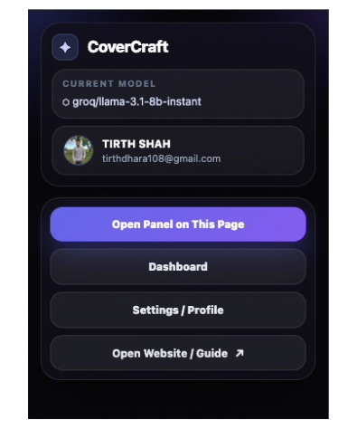
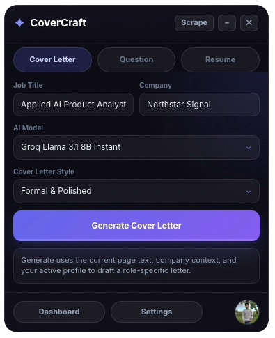
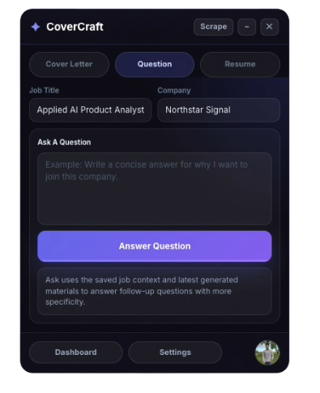
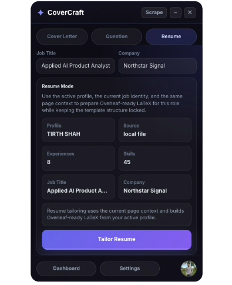
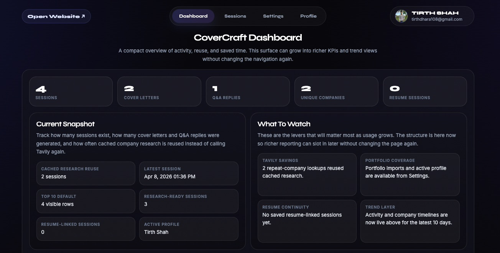
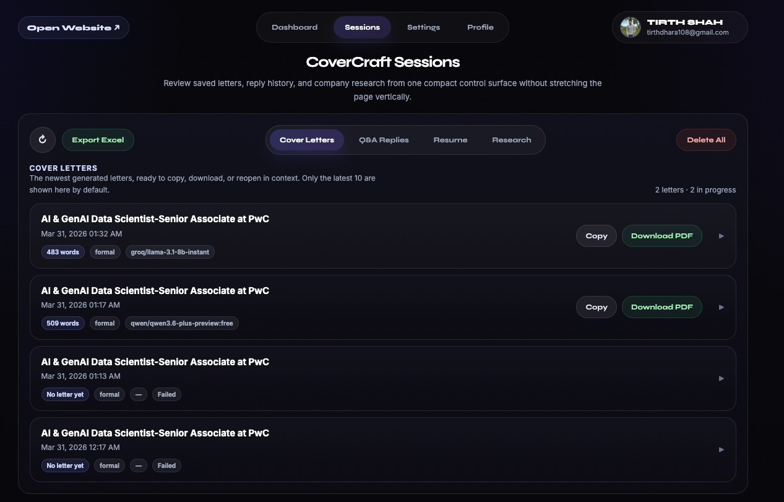
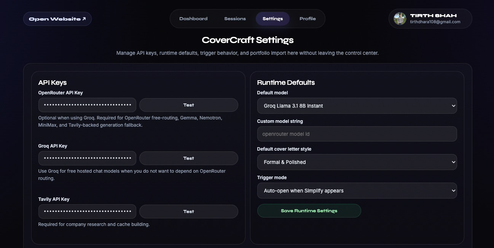
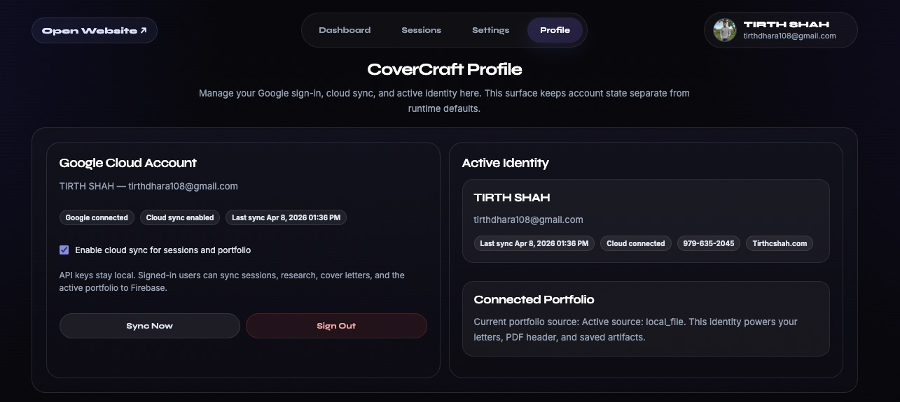
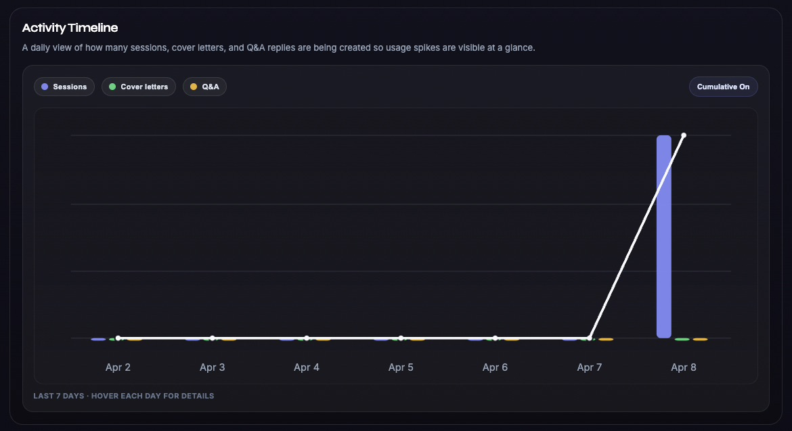
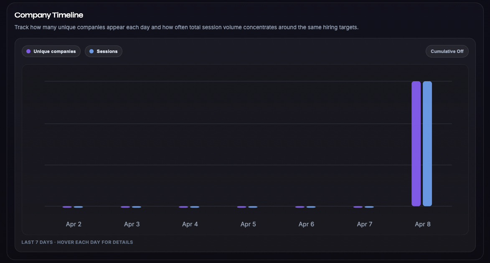

Content
Create letters, tailored resumes, and follow-up answers in one flow.
Cover letters, tailored resumes, and follow-up answers stay in one clean workspace with the role, company, and profile already in context.
Create letters, tailored resumes, and follow-up answers in one flow.
Saved sessions stay useful when you come back to the same company.
Keep the company, role, and profile pinned while you work.
Use AI and heuristics together on noisy job pages.
Sessions, profile, and output stay easy to revisit.
Follow the full sequence from the live job page to reusable output, saved sessions, and the next application.
Launch CoverCraft where you are already applying.
Keep the company, role, and profile in view.
Create the letter, resume pass, and follow-up answers.
Refine the letter, resume pass, or answer while the role context stays pinned.
Open the reusable dashboard to revisit sessions, settings, profile state, and analytics.
Keep the session ready for follow-ups, repeat companies, and the next application cycle.
Connect the required services once and keep one profile ready so every new session starts faster.
Start with model access and research.
Import it directly or build it from a resume.
Open the panel, jump to the dashboard, or head into settings and profile management from one compact starting point.

The main writing surface stays attached to the job posting so context, generated output, and follow-up edits stay together.

Users can interrogate the role, company context, or fit questions without switching surfaces or losing the saved session.

Resume iteration stays in the same application session, ready for export and reuse once the role-specific edits look right.

Move between saved work, settings, analytics, and profile state without losing job-page context.

Saved applications, generated artifacts, and context stay easy to revisit when the same company or role comes back around.

Connection settings and workspace defaults live in one place so the system stays predictable before the next application run.

The active profile stays aligned with resumes, letters, and exports so users do not have to re-enter core details each time.

The timeline view makes session volume and generation activity easier to scan without crowding the rest of the control center.

Track where applications cluster so repeat targets become obvious faster.

The account center keeps identity, sync status, and high-level usage in one place outside the extension surface itself.